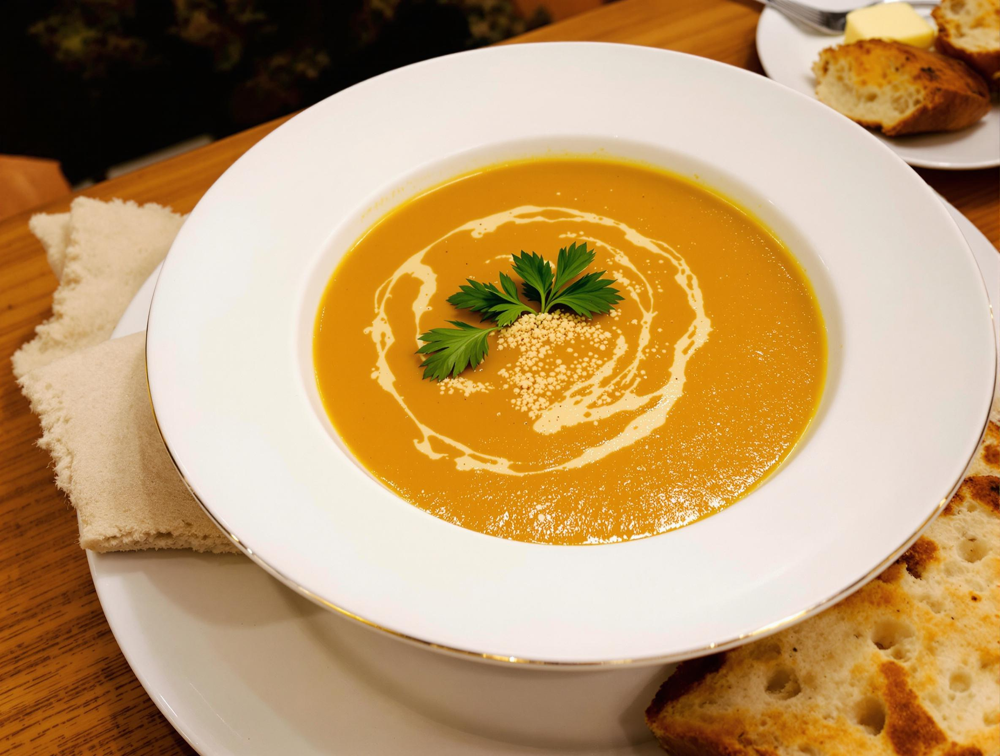

GourmeTech
✕
Accueil
Recette
Mes favoris
A propos
Mes recettes favorites
Tarte aux pommes
Dessert
60min
Facile
Voir la recette
supprimer le favoris
Ratatouille provençale
Plat
45min
Moyen
Voir la recette
supprimer le favoris

Velouté de potiron
Entrée
30min
Facile
Voir la recette
supprimer le favoris